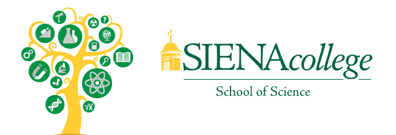

About
The Siena College Coding Contest is an annual coding contest hosted by Siena College. Each year, teams of students compete in a coding competition where each team must solve a number of coding and computer science problems. Past participants include: Niskayuna, Shenendehowa, Shaker, Scotia, Dalton, Hudson Falls, Guilderland, and many more.
Interested? Register today and sign up for our next contest!
Happy Coding!
